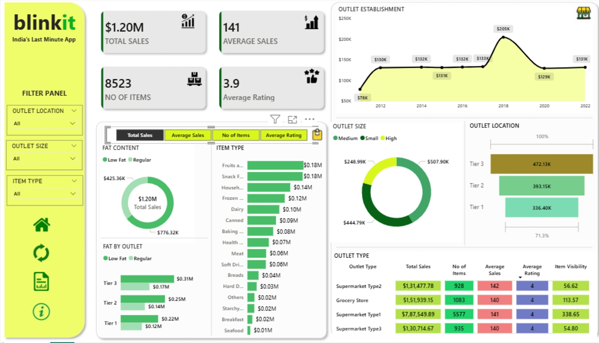

Case Study · Retail & Sales Analytics
Blinkit E-Commerce Sales Dashboard
Excel · Power BI · DAX

Sales were strong, but nobody knew where they were coming from
Blinkit's retail network spans outlets of different sizes, tiers, and formats — from small grocery stores to large supermarkets. With $1.20M in sales spread across 8,523 items, leadership needed to know which outlet types, sizes, and product categories were actually driving revenue, and whether the network's footprint matched where demand was strongest.
Without this breakdown, decisions about restocking, outlet investment, and category focus were being made on gut feel rather than on where the sales were concentrated.
From item-level data to an outlet strategy view
- Consolidated the item and outlet dataset. Structured sales records for 8,523 items across outlet location, size, and establishment year.
- Cleaned fat-content and item-type fields. Standardized inconsistent labels (e.g. "Low Fat" vs. "LF") across item categories like Fruits & Vegetables, Snack Foods, and Household.
- Built DAX measures for core KPIs. Calculated total sales ($1.20M), average sales per item (141), and average customer rating (3.9) as headline metrics.
- Segmented by outlet size and location tier. Broke down the $1.20M in sales across Small, Medium, and High outlet sizes, and across Tier 1, 2, and 3 locations.
- Analyzed outlet establishment trends over time. Tracked sales performance by the year each outlet was established, from 2012 through 2022, to see if newer or older outlets performed better.
- Compared outlet types side by side. Built a summary table contrasting Supermarket Type 1, Type 2, Type 3, and Grocery Store on total sales, item count, average rating, and item visibility.
- Added a filter panel. Enabled slicing by outlet location, outlet size, and item type so stakeholders could explore the data without needing a new report each time.
What the numbers showed
Tier 3 outlets generated the highest total sales of any location tier, ahead of Tier 2 ($393.2K) and Tier 1 ($336.4K) combined share.
Grocery Store led total sales among outlet types at $151,939, narrowly ahead of Supermarket Type 2 ($131,477) despite carrying fewer items than Type 1.
Outlets classified as "High" size outsold Medium ($248.99K) by roughly 2x, showing store footprint has a real, not marginal, effect on revenue.
Fruits & Vegetables and Snack Foods were the top two item types by sales, each contributing $0.18M — well ahead of categories like Seafood or Breakfast.
Outlets established around 2018 recorded a sharp sales peak compared to outlets established in surrounding years, an anomaly worth investigating further.
Customer ratings stayed consistently high across nearly all outlet types, suggesting sales differences are driven by location and format, not service quality.
What the business should do next
- Prioritize expansion or replication of the Tier 3 outlet model, since it's outperforming Tier 1 despite Tier 1 typically being seen as the premium/priority tier.
- Double down on Fruits & Vegetables and Snack Foods inventory and shelf space, since they consistently outsell every other item category.
- Investigate the 2018 outlet-establishment sales spike to identify what drove it — new store format, location choice, or a market condition — and replicate it where possible.
- Since customer ratings are uniformly high (3.9 avg) across outlet types, treat sales gaps as a placement and assortment problem rather than a service-quality one.
- Reassess "High" size outlet investment, since they outsell Medium outlets 2x — the current small footprint of high-size stores may be leaving revenue on the table.